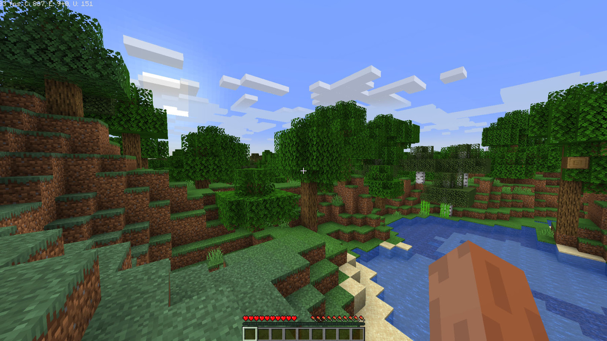

Welcome to the Ultimate Minecraft Hub!
Minecraft, the sandbox game developed by Mojang Studios, has captivated millions of players around the globe since its initial release in 2011. Known for its blocky graphics and infinite possibilities, Minecraft offers a world where creativity and exploration are limitless. Players can mine resources, build structures, and embark on adventures in a procedurally generated world that changes with each new game. Whether you're building towering castles, exploring deep caverns, or fighting off hostile mobs, Minecraft provides a platform for endless creativity and excitement.
Game Modes
In Minecraft, players start with a single goal: to survive and thrive in a world made entirely of blocks. The game features several modes including Survival, Creative, Adventure, and Spectator. Each mode offers a unique way to experience the game, catering to different play styles. In Survival mode, players must gather resources and manage hunger while defending against hostile creatures. Creative mode, on the other hand, allows for unlimited resources and freedom to build and experiment without any constraints. Adventure mode is designed for custom maps and challenges, while Spectator mode lets players explore worlds without interacting with them.